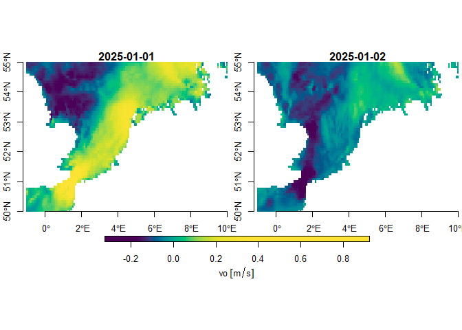

CopernicusMarine Easily access information from https://data.marine.copernicus.eu

Overview
Copernicus Marine Service Information is a programme subsidised by the European Commission. Its mission is to provide free authoritative information on the oceans physical and biogeochemical state. The CopernicusMarine R package is developed apart from this programme and facilitates retrieval of information from https://data.marine.copernicus.eu. With the package you can:
- List available marine data for Copernicus and provide meta-information.
- Download and use the data directly in R.
Why use {CopernicusMarine}
Copernicus Marine offers access to their data services through a Python application interface. For R users this requires complex installation procedures and is difficult to maintain in a stable R package. The CopernicusMarine R package has a much simpler installation procedure (see below) and does not depend on third party software, other than packages available from CRAN.
Installation
Get CRAN version
install.packages("CopernicusMarine")Get development version on github
devtools::install_github('pepijn-devries/CopernicusMarine')Usage
The package provides an interface between R and the Copernicus Marine services. Note that for some of these services you need an account and have to comply with specific terms. The usage section briefly shows three different ways of obtaining data from Copernicus:
Please check the manual for complete documentation of the package.
Downloading a subset
The code below assumes that you have registered your account details using options(CopernicusMarine_uid = "my_user_name") and options(CopernicusMarine_pwd = "my_password"). If you are comfortable that it is secure enough, you can also store these options in your .Rprofile such that they will be loaded each session. Otherwise, you can also provide your account details as arguments to the functions.
The example below demonstrates how to subset a specific layer for a specific product. The subset is constrained by the region, timerange and verticalrange arguments. The subset is downloaded to the temporary file specified with destination and can be read using the {stars} package.
destination <- tempfile("copernicus", fileext = ".nc")
cms_download_subset(
destination = destination,
product = "GLOBAL_ANALYSISFORECAST_PHY_001_024",
layer = "cmems_mod_glo_phy-cur_anfc_0.083deg_P1D-m",
variable = "sea_water_velocity",
region = c(-1, 50, 10, 55),
timerange = c("2021-01-01", "2021-01-02"),
verticalrange = c(0, -2)
)
#> Preparing job...
#> Waiting for job to finish...
#> Downloading file...
#> Done
mydata <- stars::read_stars(destination)
#> vo, uo,
plot(mydata["vo"], col = hcl.colors(100), axes = TRUE)
Downloading a complete Copernicus marine product
If you don’t want to subset the data and want the complete set, you can use the SpatioTemporal Asset Catalogs (STAC), if these are available for your product. First you can list STAC files available for a specific product (and layer):
stac_files <-
cms_list_stac_files(
"GLOBAL_ANALYSISFORECAST_PHY_001_024",
"cmems_mod_glo_phy-cur_anfc_0.083deg_P1D-m")
stac_files
#> # A tibble: 1,190 × 8
#> home native current_path LastModified ETag Size StorageClass Type
#> <chr> <chr> <chr> <chr> <chr> <chr> <chr> <chr>
#> 1 s3.waw3-1.cl… mdl-n… native/GLOB… 2023-11-17T… "\"3… 1937… STANDARD Norm…
#> 2 s3.waw3-1.cl… mdl-n… native/GLOB… 2023-11-17T… "\"a… 1937… STANDARD Norm…
#> 3 s3.waw3-1.cl… mdl-n… native/GLOB… 2023-11-17T… "\"f… 1937… STANDARD Norm…
#> 4 s3.waw3-1.cl… mdl-n… native/GLOB… 2023-11-17T… "\"d… 1938… STANDARD Norm…
#> 5 s3.waw3-1.cl… mdl-n… native/GLOB… 2023-11-17T… "\"e… 1938… STANDARD Norm…
#> 6 s3.waw3-1.cl… mdl-n… native/GLOB… 2023-11-17T… "\"5… 1938… STANDARD Norm…
#> 7 s3.waw3-1.cl… mdl-n… native/GLOB… 2023-11-17T… "\"c… 1938… STANDARD Norm…
#> 8 s3.waw3-1.cl… mdl-n… native/GLOB… 2023-11-17T… "\"6… 1937… STANDARD Norm…
#> 9 s3.waw3-1.cl… mdl-n… native/GLOB… 2023-11-17T… "\"5… 1937… STANDARD Norm…
#> 10 s3.waw3-1.cl… mdl-n… native/GLOB… 2023-11-17T… "\"6… 1937… STANDARD Norm…
#> # ℹ 1,180 more rowsDownloading the first file can be done with cms_download_stac(stac_files[1,,drop = FALSE], tempdir()), where the file would be stored in a temporary directory. By default the progress is printed as files can be very large and may take some time to download.
Copernicus Web Map Tile Services (WMTS)
Web Map Tile Services (WMTS) allow to quickly plot pre-rendered images onto a map. This may not be useful when you need the data for analyses but is handy for quick visualisations, inspection or presentation of data. In R it is very easy to add WMTS layers to an interactive map using leaflet widgets. This is demonstrated with the example below (note that in the documentation the map is only shown statically and is not interactive).
leaflet::leaflet() |>
leaflet::setView(lng = 3, lat = 54, zoom = 4) |>
leaflet::addProviderTiles("Esri.WorldImagery") |>
addCmsWMTSTiles(
product = "GLOBAL_ANALYSISFORECAST_PHY_001_024",
layer = "cmems_mod_glo_phy-thetao_anfc_0.083deg_P1D-m",
variable = "thetao"
)
Citing the data you use
A Copernicus account comes with several terms of use. One of these is that you properly cite the data you use in publications. In fact, we also have credit the data used in this documentation, which can be easily done with the following code:
cms_cite_product("GLOBAL_ANALYSISFORECAST_PHY_001_024")
#> $doi
#> [1] "E.U. Copernicus Marine Service Information; Global Ocean Physics Analysis and Forecast - GLOBAL_ANALYSISFORECAST_PHY_001_024 (2016-10-14). DOI:10.48670/moi-00016"A note to CopernicusMarine ≤0.1.3 users
Older versions of the CopernicusMarine package implemented functions that interface with services that are deprecated by Copernicus Marine. Namely, the MOTU server (for subsetting and downloading), the FTP server (for downloading full sets) and the WMS server for adding tiles to maps.
These services are phased out, and in the latest release of this package, functions that interact with them are deprecated. They can still be used for as long as these services are provided by Copernicus Marine. When these services are terminated, the functions will become defunct.
Please switch to the implementation of the new services at your earliest convenience. Specifically, this means that you need to use:
-
cms_download_subsetinstead ofcopernicus_download_motu -
cms_download_stacinstead ofcopernicus_download_ftp -
addCmsWMTSTilesinstead ofaddCopernicusWMSTiles
The design of the new functions is very similar to that of the old ones, so switching should be relatively easy.